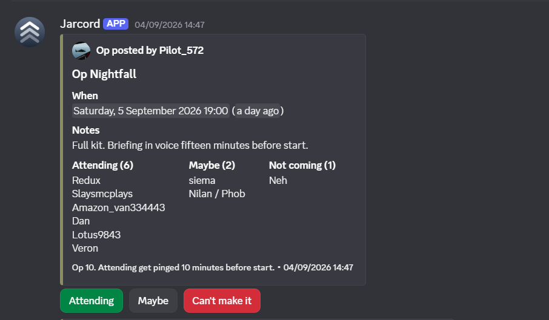
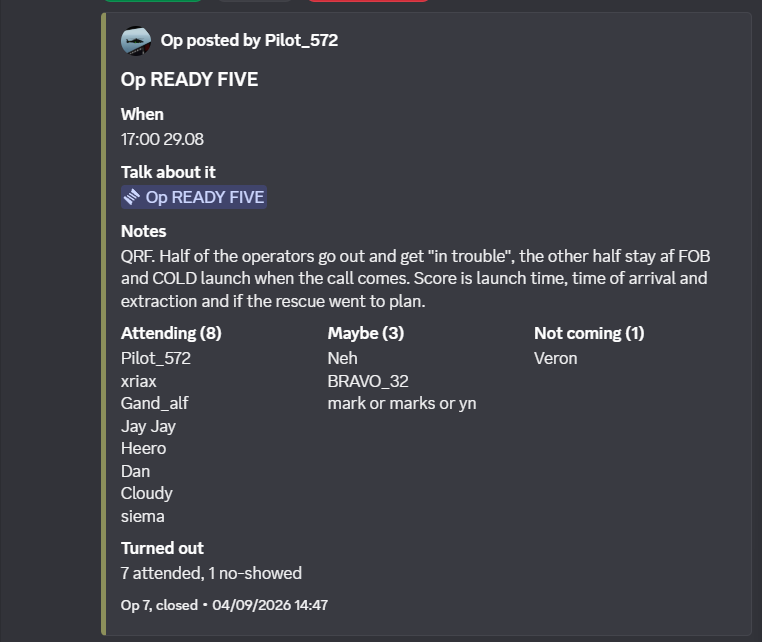
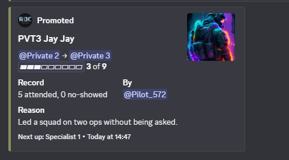
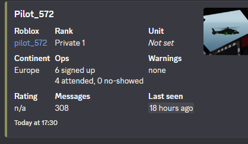
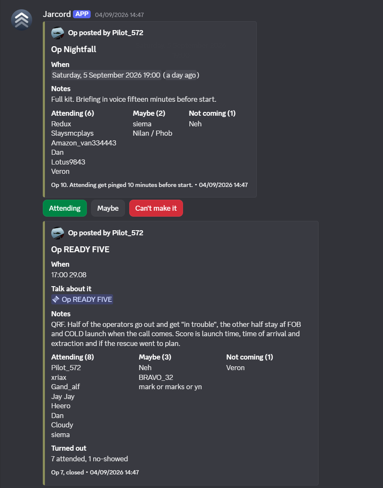

Made for factions that run real ops.
Jarcord runs in Rapid Ops Company, a BRM5 faction on Roblox. Every card on this page comes from their server.

Post the op.
One card takes the RSVP. Pressing a button rewrites it in place, so the three lists are always current, and Attending gets pinged ten minutes before start.

Close it with who turned up.
The host unticks the no-shows and ticks the walk-ins. The card keeps the turnout and loses its buttons. That is how attendance gets recorded, from inside Discord.
Everything else reads from it.

Promotion shows the record
The notice carries attended and no-showed next to the reason, so nobody has to ask what a private did to make corporal.

The profile tells the truth
Signed up, attended, no-showed, warnings, last seen. Streaks appear when they are earned.

One channel
Posted, closed, promoted. It all lands in the channel the faction already reads, with nothing to log in to.
Set up once. Then post.
Six commands from inside Discord, run by whoever holds Manage Server. No dashboard, no website to log in to.
Six commands.
Roles are matched by name and created only when missing. Nothing you already have is touched.